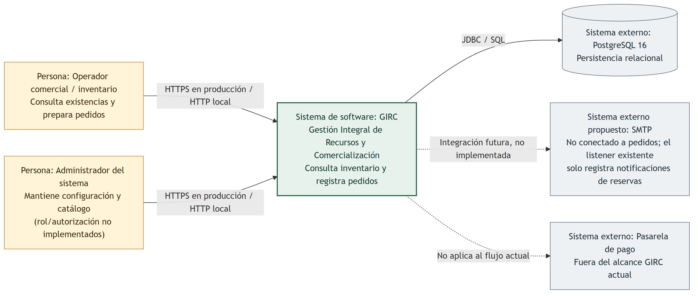
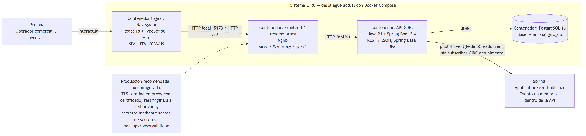
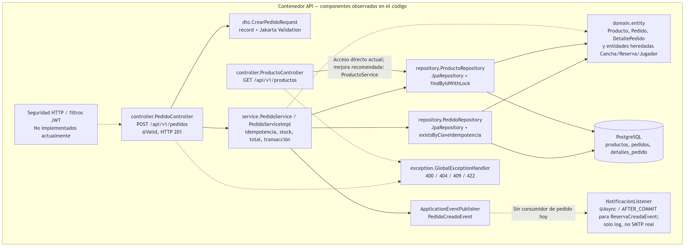
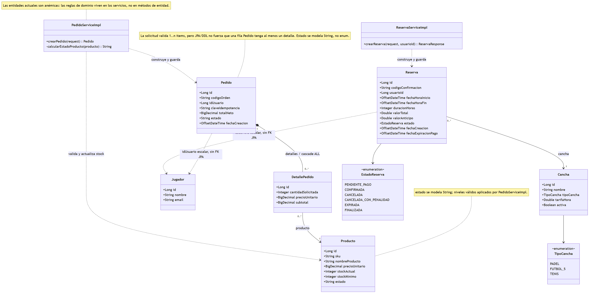
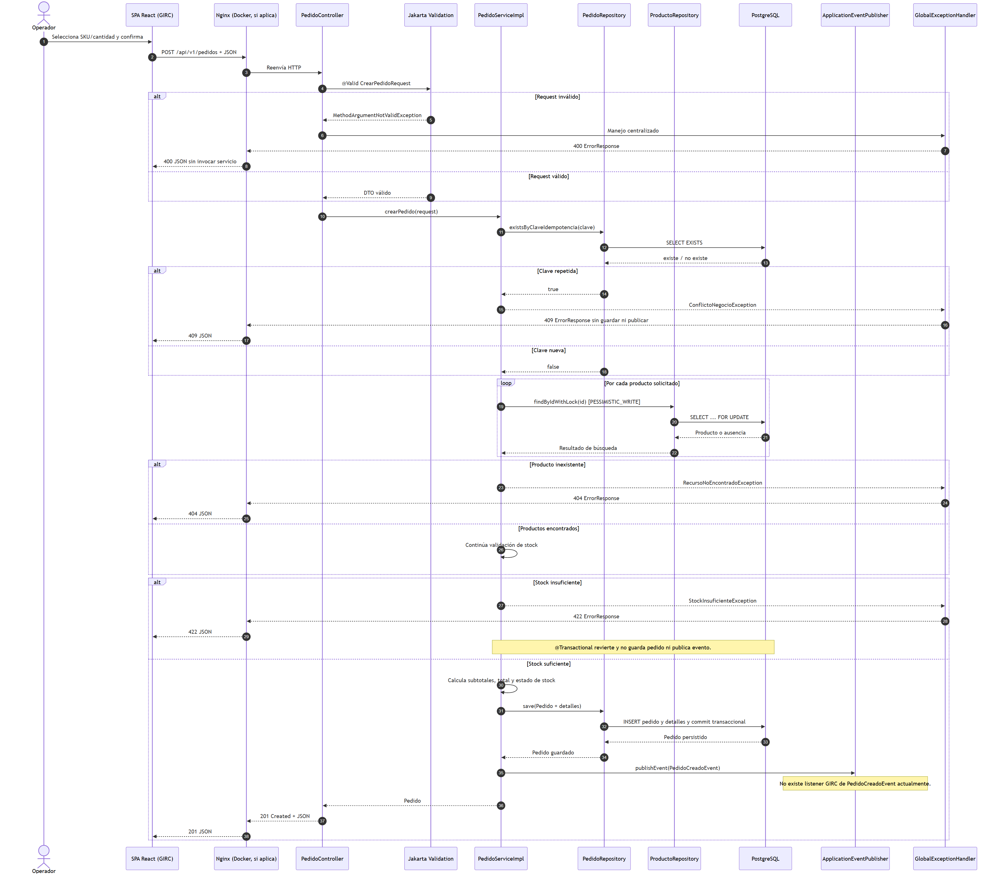
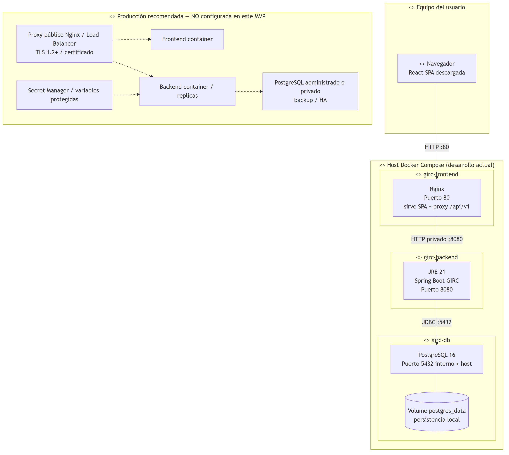

Asignatura: [Completar]
Docente: [Completar]
Integrantes:
[Completar nombres del equipo]
Institución:
[Completar]
Fecha: 21 de noviembre de 2026
Repositorio: Liz010713/GIRC
Este documento describe la implementación y la arquitectura verificadas en el repositorio. Los elementos marcados como propuestos, brecha o no implementados no deben presentarse como funcionalidad existente.
GIRC es una aplicación web para consultar inventario y registrar pedidos. La SPA React consulta productos desde Spring Boot, permite seleccionar artículos y enviar un pedido. El backend valida idempotencia, bloquea filas de productos, comprueba existencias, calcula subtotales y total, actualiza el estado del stock, persiste pedido/detalles y publica un evento de aplicación.
El estilo adoptado es monolito modular con arquitectura en capas. El repositorio conserva clases de reservas del proyecto formativo original como módulo heredado; la interfaz principal y la identidad visible ahora corresponden a GIRC.
| Capacidad | Evidencia actual |
|---|---|
| Consultar inventario | GET /api/v1/productos, ProductoController,
ProductoRepository.findAll() |
| Crear pedido | POST /api/v1/pedidos, PedidoController,
PedidoServiceImpl |
| Validación de entrada | CrearPedidoRequest con @NotNull,
@NotBlank, @NotEmpty, @Valid,
@Min(1) |
| Idempotencia | PedidoRepository.existsByClaveIdempotencia() y UNIQUE
en columna |
| Concurrencia de stock | @Transactional y findByIdWithLock() con
PESSIMISTIC_WRITE |
| Errores HTTP | GlobalExceptionHandler: 400, 404, 409 y 422 |
| Eventos | Se publica PedidoCreadoEvent; aún no existe listener de
pedido |
| Notificaciones | El listener heredado de reservas solo escribe log; no hay SMTP real |
| Seguridad | No hay autenticación/autorización implementada; no desplegar API abierta |
| Integraciones de pago | No forman parte del flujo actual de GIRC |
El backend es una aplicación Spring Boot única, separada en
controller, service, repository,
domain.entity, dto y exception.
React se despliega como SPA y se comunica con la API mediante HTTP/JSON.
PostgreSQL es un contenedor separado.
Se elige este estilo para el alcance formativo porque mantiene una transacción atómica para consultar y actualizar stock, simplifica pruebas con JUnit/Mockito/MockMvc/H2 y hace explícitas las responsabilidades. Microservicios añadirían coordinación de transacciones y despliegue sin una necesidad demostrada. Hexagonal/Clean sería viable si aumentan integraciones, pero hoy no hay puertos/adaptadores definidos.
| Atributo | Mecanismo actual | Evidencia / riesgo |
|---|---|---|
| Integridad/concurrencia (RNF-02) | @Transactional, bloqueo PESSIMISTIC_WRITE,
UNIQUE de clave idempotente |
No hay benchmark ni prueba de concurrencia real en PostgreSQL; riesgo de contención/deadlock con pedidos multítem |
| Rendimiento | Índices compuestos de reservas; React filtra catálogo en cliente | Catálogo usa findAll() sin paginación; P95 no
medido |
| Seguridad | Validación de entrada, manejo central de errores, parámetros JPA | No existe SecurityFilterChain, JWT ni control por rol; CORS permite
* |
| Mantenibilidad (RNF-05) | Interfaces de servicio/repository y DTO de entrada | ProductoController accede directo al repository;
controllers de pedido devuelven entidades JPA |
| Resiliencia/eventos | ApplicationEventPublisher; listener de reserva async
AFTER_COMMIT |
PedidoCreadoEvent no tiene consumidor y Spring event en
memoria no es durable |
| Despliegue | Docker Compose para DB, API y Nginx | Compose describe entorno local; proxy TLS, backups y monitoreo de producción no están configurados |
Los seis diagramas editables están en diagrams/. La versión para
lectura/render en GitHub está en Diagramas del
Parcial 2.
Sistema central GIRC, operador comercial/inventario y administrador como actores conceptuales. PostgreSQL es dependencia real. SMTP se muestra como sistema propuesto/no conectado para GIRC; una pasarela de pago se declara fuera del flujo actual. La autenticación de roles no está implementada.
Fuente: c4-contexto.mmd.
Navegador con React/TypeScript, Nginx como servidor SPA/proxy, API Java 21/Spring Boot y PostgreSQL 16. Comunicación local HTTP, API JSON y JDBC. La sección de producción del dibujo se etiqueta expresamente como recomendación, no como despliegue existente.
Fuente: c4-contenedores.mmd.
Se muestran controllers, DTO, service, repositories, entidades,
manejo global de errores y evento de aplicación. No se dibuja un filtro
JWT como existente: se marca como brecha. También se hace visible que
ProductoController consulta el repository directamente.
Fuente: c4-componentes-backend.mmd.
El diagrama cubre entidades GIRC y las entidades de reservas que
permanecen en la plantilla. Cardinalidades reales:
Pedido 1 — 0..N DetallePedido,
DetallePedido N — 1 Producto,
Reserva N — 1 Cancha.
idUsuario/usuarioId son escalares sin FK a
Jugador. Pedido.estado y
Producto.estado son strings, no enums. La lista de items
del request exige 1..n en API, pero la BD no impone la existencia de
hijos.
Las entidades son anémicas en el código actual:
crearPedido() y calcularEstadoProducto()
residen en PedidoServiceImpl; crearReserva()
reside en ReservaServiceImpl. El diagrama muestra estas
operaciones donde son implementadas, sin atribuirlas a las
entidades.
Fuente: uml-clases-dominio.mmd.
El flujo incluye validación 400, idempotencia 409, producto ausente 404, stock insuficiente 422, camino válido, bloqueo de producto, persistencia y respuesta 201. En el camino 422 la transacción revierte y no se guarda ni publica evento. La publicación del evento no tiene subscriber GIRC hoy.
Fuente: uml-secuencia-crear-pedido.mmd.
El entorno reproducible actual es Docker Compose: Nginx, API y PostgreSQL con volumen local. El diagrama distingue una propuesta de producción con TLS, secretos externos y PostgreSQL protegido; no se afirma que exista un VPS/cloud desplegado.
Fuente: uml-despliegue.mmd.
El diccionario detallado con tipo SQL, restricciones, claves,
índices, significado y mapeo se encuentra en persistencia/diccionario-datos.md.
Buenas prácticas presentes: PK identity; SKU/código/idempotencia
únicos; FK para detalles y cancha de reserva; BigDecimal en
importes GIRC; @Enumerated(EnumType.STRING) en
estados/tipos del módulo de reserva; FetchType.LAZY en
relaciones Reserva-Cancha, Pedido-Detalles y Detalle-Pedido. Excepción
detectada: DetallePedido.producto omite fetch,
por lo que JPA lo deja EAGER.
ddl-auto=update es cómodo en desarrollo, pero para
producción se recomienda Flyway/Liquibase. Validar FKs, CHECKs e índices
en PostgreSQL real; H2 es evidencia de tests, no sustituto de todas las
pruebas de dialecto.
PedidoController recibe HTTP;
PedidoServiceImpl aplica reglas; repositories aíslan acceso
a datos; GlobalExceptionHandler traduce excepciones.ApplicationEventPublisher por constructor
(@RequiredArgsConstructor).CrearPedidoRequest y su tipo
Item aíslan y validan el contrato de entrada.PedidoRepository/ProductoRepository abstraen
persistencia; Spring Data genera operaciones CRUD.PedidoServiceImpl
publica PedidoCreadoEvent. El patrón de publicación existe,
pero falta un listener específico de pedidos.@Transactional mantiene
actualización de stock y creación de pedido en una unidad atómica.ProductoService para que
ProductoController no dependa directamente del
repository.DetallePedido.producto como
FetchType.LAZY y probar serialización con OSIV
apagado.idUsuario del body.PedidoCreadoEvent o retirar el
evento si no se consume; usar Outbox si se exige durabilidad.En la última validación registrada del repositorio se ejecutaron
21 pruebas backend, 0 fallidas,
BUILD SUCCESS. El frontend pasó
npm ci y npm run build. Las pruebas cubren
servicio de pedidos, MockMvc, reglas de reservas heredadas y
@DataJpaTest con H2 para solapamiento parcial, contigüidad
y cancelación.
La cobertura no representa una prueba de carga, seguridad, concurrencia real de PostgreSQL, integración SMTP ni despliegue TLS. Añadir evidencia si se ejecutan esas pruebas en el entorno del equipo.
alt:
400, 409, 404, 422 y 201.mvn test, build frontend y
brechas de producción declaradas.





Motor objetivo: PostgreSQL 16. Los tipos SQL
corresponden al mapeo PostgreSQL habitual de Hibernate 6. El DDL
definitivo debe verificarse con migraciones antes de producción. La
aplicación usa actualmente
spring.jpa.hibernate.ddl-auto=update; no hay
Flyway/Liquibase ni scripts versionados de migración.
productosEntidad com.courtsync.pro.domain.entity.Producto.
| Columna | Tipo SQL | Restricciones observadas | ORM / descripción |
|---|---|---|---|
id |
BIGINT |
PK, identity | @Id, @GeneratedValue(IDENTITY) |
sku |
VARCHAR(50) |
NOT NULL, UNIQUE | Código comercial, @Column(unique=true) |
nombre_producto |
VARCHAR(150) |
NOT NULL | Nombre visible |
precio_unitario |
NUMERIC(12,2) |
NOT NULL; @DecimalMin("0.0") |
BigDecimal, precio unitario |
stock_actual |
INTEGER |
NOT NULL; @Min(0) |
Existencias disponibles |
stock_minimo |
INTEGER |
NOT NULL; @Min(1) |
Umbral de alerta |
estado |
VARCHAR(20) |
NOT NULL | String: Disponible, Crítico o Agotado; recalculado por
service |
Índice único en sku. La consulta del catálogo hoy usa
findAll() sin paginación.
pedidosEntidad Pedido.
| Columna | Tipo SQL | Restricciones observadas | ORM / descripción |
|---|---|---|---|
id |
BIGINT |
PK, identity | Identificador |
codigo_orden |
VARCHAR(40) |
NOT NULL, UNIQUE | Código ORD-... |
id_usuario |
BIGINT |
NOT NULL, sin FK JPA | ID escalar aportado por request; no autentica identidad |
clave_idempotencia |
VARCHAR(100) |
NOT NULL, UNIQUE | Evita reutilización de clave |
total_neto |
NUMERIC(12,2) |
NOT NULL | Suma de subtotales |
estado |
VARCHAR(30) |
NOT NULL | String, estado inicial Pendiente; no enum |
fecha_creacion |
TIMESTAMP WITH TIME ZONE |
NOT NULL | OffsetDateTime UTC |
Relación Pedido 1 -> 0..N DetallePedido,
@OneToMany(cascade=ALL, orphanRemoval=true). El request
valida lista no vacía, pero el esquema no fuerza que toda orden tenga
detalle.
detalles_pedidoEntidad DetallePedido.
| Columna | Tipo SQL | Restricciones observadas | ORM / descripción |
|---|---|---|---|
id |
BIGINT |
PK, identity | Identificador |
pedido_id |
BIGINT |
NOT NULL, FK -> pedidos.id |
@ManyToOne(fetch=LAZY) |
producto_id |
BIGINT |
NOT NULL, FK -> productos.id |
@ManyToOne; actualmente hereda EAGER por omitir
fetch |
cantidad_solicitada |
INTEGER |
NOT NULL | Unidades pedidas |
precio_unitario |
NUMERIC(12,2) |
NOT NULL | Precio histórico al momento de compra |
subtotal |
NUMERIC(12,2) |
NOT NULL | Precio por cantidad |
PostgreSQL no crea índices automáticamente sobre FKs. Evaluar índices
en pedido_id y producto_id según
consultas/volumen.
Se conservan para respetar la plantilla del curso; no son el flujo de inventario GIRC.
jugadores| Columna | Tipo SQL | Restricciones | Mapeo / significado |
|---|---|---|---|
id |
BIGINT |
PK, identity | ID |
nombre |
VARCHAR(120) |
NOT NULL | Nombre |
email |
VARCHAR(160) |
NOT NULL, UNIQUE | Correo |
canchas| Columna | Tipo SQL | Restricciones | Mapeo / significado |
|---|---|---|---|
id |
BIGINT |
PK, identity | ID |
nombre |
VARCHAR(150) |
NOT NULL | Nombre |
tipo_cancha |
VARCHAR(30) |
NOT NULL | @Enumerated(STRING), TipoCancha |
tarifa_hora |
DOUBLE PRECISION |
NOT NULL | Tarifa |
activa |
BOOLEAN |
NOT NULL | Indicador activo |
reservas| Columna | Tipo SQL | Restricciones | Mapeo / significado |
|---|---|---|---|
id |
BIGINT |
PK, identity | ID |
codigo_confirmacion |
VARCHAR(30) |
NOT NULL, UNIQUE | Código de reserva |
cancha_id |
BIGINT |
NOT NULL, FK -> canchas.id |
ManyToOne(fetch=LAZY) |
usuario_id |
BIGINT |
NOT NULL, sin FK JPA a jugadores | ID escalar |
fecha_hora_inicio |
TIMESTAMP WITH TIME ZONE |
NOT NULL | Inicio |
fecha_hora_fin |
TIMESTAMP WITH TIME ZONE |
NOT NULL | Fin |
duracion_horas |
INTEGER |
NOT NULL | Duración |
valor_total |
DOUBLE PRECISION |
NOT NULL | Importe heredado |
valor_anticipo |
DOUBLE PRECISION |
NOT NULL | Importe heredado |
estado |
VARCHAR(30) |
NOT NULL | @Enumerated(STRING), EstadoReserva |
fecha_creacion |
TIMESTAMP WITH TIME ZONE |
NOT NULL | Fecha creación |
fecha_expiracion_pago |
TIMESTAMP WITH TIME ZONE |
NOT NULL | Expiración |
Índices compuestos declarados:
idx_reservas_cancha_inicio_estado (cancha_id, fecha_hora_inicio, estado)
para disponibilidad y
idx_reservas_usuario_inicio (usuario_id, fecha_hora_inicio)
para límite diario.
ddl-auto=update ha creado todos los
CHECK constraints en bases existentes. Inspeccionar DDL real.detalles_pedido.pedido_id,
detalles_pedido.producto_id,
reservas.cancha_id. Los IDs de usuario no tienen FK.ddl-auto=update por migraciones versionadas
para producción.PedidoController
actualmente responde una entidad y Pedido.detalles es LAZY;
comprobar serialización con open-in-view=false.BigDecimal; reservas heredadas aún usa
Double para dinero.| RNF / requisito | Diseño actual | Evidencia verificable | Brecha / seguimiento |
|---|---|---|---|
| Concurrencia de inventario RNF-02 | @Transactional + @Lock(PESSIMISTIC_WRITE)
en ProductoRepository |
PedidoServiceImpl, tests de stock en
PedidoServiceTest |
Agregar prueba concurrente con PostgreSQL, bloqueo ordenado por ID, timeout y métrica |
| Rendimiento | Índices compuestos reservas y consulta agregada de
disponibilidad |
ReservaRepository,
ReservaRepositoryDataJpaTest |
GET /productos sin paginación; P95 no medido;
planificar carga/EXPLAIN |
| Seguridad | Validación de request y GlobalExceptionHandler |
PedidoControllerTest |
No hay autenticación/autorización; CORS *; no publicar
expuesto |
| Mantenibilidad | Paquetes controller/service/repository/domain/dto/exception | Interfaces PedidoService,
PedidoRepository, DTO de entrada |
ProductoController salta service; controller devuelve
entidad Pedido |
| Resiliencia de evento | ApplicationEventPublisher para
PedidoCreadoEvent |
PedidoServiceTest verifica publish/never |
Evento solo memoria y sin listener GIRC; Outbox/listener si requiere entrega durable |
| Persistencia | PostgreSQL + JPA, H2 en @DataJpaTest |
ReservaRepositoryDataJpaTest |
Integración de consultas de pedidos contra Postgres no creada; sin Flyway/Liquibase |
| Disponibilidad/despliegue | Docker Compose separa frontend, backend y DB | docker-compose.yml |
No hay TLS, backup, healthchecks para API/frontend ni observabilidad productiva |
| Principio/patrón | Evidencia en código | Explicación | Estado |
|---|---|---|---|
| Single Responsibility | PedidoController, PedidoServiceImpl,
repositorios, GlobalExceptionHandler |
HTTP, reglas, persistencia y traducción de errores están en responsabilidades diferentes | Aplicado en pedido |
| Dependency Inversion | PedidoService y repositorios inyectados por constructor
(@RequiredArgsConstructor) |
Servicio depende de contratos Spring Data/interfaces, no crea dependencias concretas manualmente | Aplicado |
| DTO | CrearPedidoRequest como record con validaciones
anidadas |
Contrato de entrada desacoplado de validación de dominio | Aplicado en entrada; respuesta sigue exponiendo entidad |
| Repository | PedidoRepository, ProductoRepository,
ReservaRepository |
Abstracción de persistencia y consultas derivadas/JPQL | Aplicado |
| Observer / Event | ApplicationEventPublisher +
PedidoCreadoEvent; ReservaCreadaEvent +
NotificacionListener |
Notifica publicación sin que el service invoque directamente un transporte externo | Parcial: no hay listener para eventos PedidoCreadoEvent; listener de reserva solo escribe log |
| Strategy | No se encontró una implementación Strategy en el estado actual | No afirmar que está aplicada; sería útil si aparecen políticas variables de precio/stock | No aplicado |
| Factory | No hay factory de dominio explícita | La creación se realiza con Lombok Builder en service | No aplicado como patrón Factory |
Crear ProductoService para mover la consulta
findAll() fuera de ProductoController, y crear
PedidoResponse/DetallePedidoResponse para que
la API no serialice entidades JPA directamente. Esta evolución mejora
SRP, límites de contrato y control de carga lazy sin cambiar las reglas
de negocio.
GIRC es un MVP académico con un flujo transaccional de consulta de inventario y creación de pedidos. Se requiere separar la API, reglas de negocio y persistencia sin añadir infraestructura distribuida difícil de probar. La mantenibilidad pide aislar cambios de reglas; la integridad exige transacciones para pedido y stock.
Adoptar un monolito modular organizado en capas. React es un cliente SPA separado y Spring Boot es el backend desplegable, que contiene módulos GIRC y clases de reservas heredadas.
PedidoController -> PedidoService -> repositories
respeta el flujo. ProductoController accede directamente a
ProductoRepository; para aplicar estrictamente service
layer debe introducirse ProductoService.Pedidos concurrentes podrían leer el mismo stockActual y
vender unidades por encima de las disponibles. RNF-02 exige integridad;
RN-02.1 exige HTTP 422 sin guardar ni publicar evento si el stock es
insuficiente.
@Transactional + PESSIMISTIC_WRITE por
producto.@Version, conflictos y
reintentos.stock_actual >= cantidad) y comprobar filas
afectadas.PedidoServiceImpl.crearPedido() es
@Transactional; consulta cada producto con
ProductoRepository.findByIdWithLock()
(@Lock(PESSIMISTIC_WRITE)), valida todas las líneas y
después muta las entidades administradas, guarda pedido/detalles y
publica PedidoCreadoEvent. Las excepciones runtime provocan
rollback.
El sistema necesita relaciones referenciales entre pedidos, detalles y productos, unicidad de SKU/idempotencia y transacciones con bloqueo de filas. También se busca una base embebida para pruebas.
PostgreSQL 16 para ejecución con Docker Compose y Spring Data JPA
para persistencia. H2 se usa con @DataJpaTest. Las
entidades declaran PK, UNIQUE, NOT NULL, FKs e
índices de las consultas heredadas de reservas.
BigDecimal/NUMERIC(12,2) y soporte de bloqueos.data.sql usa SQL PostgreSQL
(ON CONFLICT, setval), por lo que se desactiva
en pruebas H2; pueden existir diferencias de dialecto.ddl-auto=update no es
migración reproducible para producción.GIRC recibe idUsuario en el request de pedido, pero
actualmente no tiene Spring Security, JWT, sesión ni autorización por
rol. CORS permite *. El idUsuario enviado por
el cliente no autentica identidad y es manipulable.
El MVP académico conserva ejecución local sin autenticación, pero se
declara no apto para publicar con acceso abierto. Para
producción se propone integrar proveedor OIDC/JWT, definir roles
(ADMIN_INVENTARIO, VENDEDOR), tomar el usuario
del principal autenticado, retirar CORS wildcard y proteger operaciones
de escritura.